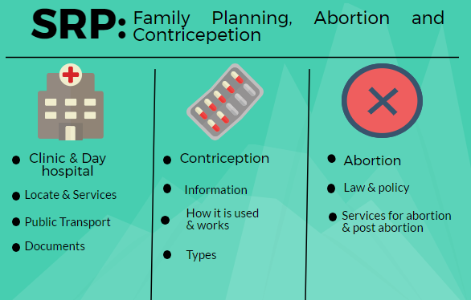
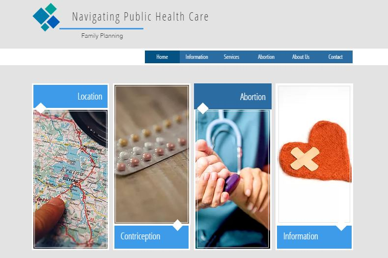

Senior Rresearch Project: Public Health Services in Cape Tow
About
Sneak peak into Gabrielle's Life
Academically
BA: Interactive Media University of Cape Town
I am currently a third year interactive media student with a passion for desiging interactions. I enjoy buidling maps and creating data visuals.
Business Owner
Vintage Treasures pop-up clothing store
Started my business 3 years ago. I am hoping to strat an online store in the next 3 years.
For Fun
Art, nature, design, photography and the ocean
I am happiest when creative tasks are involved.
Contact Me: myrgab005@myuct.ac.za
Interactive Storybook
Young Hustla comic book adapted into an interactive story book. Using proccessing and APDE to convert to android application.
Andile, the owner of Young Hustla's, gave athourisation for use of the comics content. The comic was taken form a PDF format. The visuals were cropped out of the PDF file into photoshop allowing minimum alterations. Below is the Video of the interactive application
Website aimed at helping Cape Town based citizens find out needed information about public services

Basic Project Outline
Data Journalism
Information from South African Census and news coverage of issuess relating to public services. Once the key issues are established a solution will be put forward.
statistics
Government Health Care stats
69.3 % of households went to public hospitals or clinics when a household memeber fell ill or got injured.
43% of patients visiting public clinics complained of long waiting times.
Western Cape Broadband stats (2014)
48,7% of South Afican housholds have access to internet.
61,2% of the Western Cape households have access to the interent
By 2018 the Western Cape Government predicts wifi will be accessable in each district. Therefore increasing the need for websites with valuable information.
Final SRP Plan
Public Health services in the Western Cape
This paper aims to disclose the concerns young citizens (age 15-29) face when using public health services for family planning, maternity and abortion to provide possible solutions. With the research conducted, a website will be designed according the concerns which young citizens in aim of addressing their concerns when starting family planning, maternity, or abortion.
Research
According to statistics, the demand for information on family planning, maternity and abortion are high amongst youth in the Western Cape.
Contraception and Childbirths
If all of the sexually active unmarried women who said they want to space or limit their births were to use family planning methods, the Contraceptive prevalence rate would increase from 64% to 88%.
A comparison was done between the SADHS 1998 with the SADHS 2016 on women and contraceptive. The comparison found that the use of injectable contraceptives declined from 44% in 1998 to 26% in 2016 and the use of the pill declined from 16% in 1998 to 5% in 2016; the use of the male condom rose from 3% in 1998 to 24% in 2016. In 2016 1426 of youth aged 15-19, had 6.1% had live births, 76.3% have begun childbearing.
Within the Western Cape 0.5% of teenagers, (age 15-19), have given live birth, 3.1% are pregnant with their first child. 87.3% of the Western Capes unmarried sexually active women. There is a clear demand for information on family planning that is accessible to the Western Cape youth.
These percentages give a very limited view of the context as a whole; however, it provides insight into the use of contraception and maternity amongst women.
Abortion
According to the COTP Act, every woman has the right to access early termination of pregnancy in accordance with her beliefs. The minor-consent provision in the Act also ensures that minors have access to safe abortion services without the need for parental consent.
According to the country fact sheet, public health facilities document abortion procedures and many clients fear the breach of confidentiality; the shame associated with terminating a pregnancy means many women access illegal abortion services, which they believe to be discrete. An estimated 50% of abortions in South Africa continue to occur outside of designated health facilities.
These facts indicate a need for space were young citizens can get information on abortion laws and abortion and post-abortion care services.
Socioeconomic influences
Access to proper medical attention and hygienic conditions during childbirth can reduce the risk of complications and infections that may lead to death or serious illness for the mother, baby, or both (WHO 2006). Mothers’ educational status is highly associated with whether a skilled provider assists their delivery and whether the birth happens in a health facility. 89% of births to mothers with no education were assisted by a skilled provider and 86% were delivered in a health facility, while 98% and 99%, respectively, of births to mothers with more than a secondary education. This comparison was made with wealth distribution and a similar outcome was found.
Proving valuable complicated information in a simple understandable manner is in clear demand among the 99% of women who are not giving birth in a medical condition.
Problem
Based on the statistics there is demand for information on family planning, contraception and abortion in the Western Cape. The problems identified were discovered through analysing data and spending a week at a day hospital and clinic in the Western Cape.
Within the Western Cape, many areas have different needs amongst the youth that use public health care. The established solution aims at simplifying the information and make it understandable to the majority of the Western Cape. All the content will be translated into isiXhosa allowing users who are not proficient in English to access the information.
Solution
Data Journalism
The solution will use a data journalism format in which to inform its users. Data journalism helps journalist tell a complex story through engaging infographics. The Data journalism handbook suggests three question which all data journalists need to ask.
Firstly, how was the data collected? In the case of this study all, the information was collected from Statics of South Africa and through analysing interaction within day hospitals and clinics.
Secondly, what is there to learn? For the data collected, the demands of the users of public health care for family planning, maternity and abortion can be identified.
Thirdly, how reliable is the information? This research does not interrogate the data extensively, however, survey sample sizes were taken into account when analysing the data.
The above answers determine whether the information can be used to tell a valuable story. Simplifying information is not only about informing the public on statics and facts, it is about conveying a story to the audiences. This solution aims at taking the data and simplifying it so it can become accessible but also it tells a story about the context in which the data was taken from. The solution will include interviews with those who the statistics speak of to add a human element.
Solution Plan
A media platform will be designed for Western Cape on family planning. The mobile friendly website will allow the user to find a clinic or day hospital within their area. The information will include the nearest form of public transport from each clinic or day hospital. The information on each clinic and day hospital specialisation will be included.
The website will aim at simplifying information provided by official government website about family planning. A checklist will be used to help users keep track of the needed documents before attending the facility. The general procedure at each day hospital and clinic will be outlined if the system is new to the user. The website will facilitate abortions demands through outlining laws and policies around abortion. It will provide information about services for abortion and post abortion. Contact details of private businesses that deliver medication from specific clinics will be included.
All the information provided on the website will use data journalism methods when deciding how data will be conveyed.
Design (interface)

The above image shows the basic interface of the website